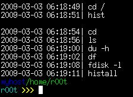

Zsh 技巧三则
在每个目录下，经常用到的命令是不一样的 比如在源码目录下常用的是 make xxx ，在配置文件目录下常用的是 vi xxx …… 这种情况下，每个目录使用独立的历史纪录就比较方便（似乎有发行版中的 bash 默认如此设置） 实现方式很简单： 1. 在 $HOME/.zshhistory 目录下创建与工作目录层级相同的目录，并在使用该目录下的 zhistory 作为历史纪录文件 2. 由于切换目录总是使用 cd 命令，因此在 cd 的时候重新设定 $HISTFILE 变量即可 （$HISTFILE 指定 zsh 使用的历史纪录文件）
# 定义函数，替换原来的 cd
cd() {
builtin cd "$@" # 执行原来的 cd 命令
fc -W # 写历史纪录文件，默认参数为 $HISTFILE 。初始值为 #2 处的定义；执行了 cd 命令后为 #1 处的定义
# 实际上，你不可能在每个目录下都执行个把命令，很多目录你没有去过，只要为你去过的目录建立历史纪录就可以了
local HISTDIR="$HOME/.zshhistory$PWD" # 定义历史纪录目录。每次 cd 后，$PWD 对应与工作目录层级相同的目录
if [ ! -d "$HISTDIR" ] ; then # 如果不存在这个目录，则建立一个
mkdir -p "$HISTDIR"
fi
export HISTFILE="$HISTDIR/zhistory" #1 定义历史纪录文件
touch $HISTFILE # 先 touch 一下，如果不存在的话就会新建一个
# 清空原来的历史纪录
local ohistsize=$HISTSIZE # 设定一个变量临时存储原历史纪录大小
HISTSIZE=0 # 通过禁用历史纪录清空
HISTSIZE=$ohistsize # 重新设定历史纪录大小
fc -R #读历史纪录文件，默认参数为 $HISTFILE 。也就是 #1 处的定义
}
# 启动 zsh 的时候，并没有执行 cd 命令，因此 $HOME 目录对应的历史纪录目录可能不存在，先建立它
mkdir -p $HOME/.zshhistory$PWD
#2 同样，启动 zsh 的时候， 还没有定义 $HOME 目录对应的 $HISTFILE ，所以先定义它
export HISTFILE="$HOME/.zshhistory$PWD/zhistory"
这样翻历史纪录是方便了，但要查看全部的历史纪录可能有点麻烦了
# 使用 setopt EXTENDED_HISTORY 选项，为命令添加时间戳 # 这非常重要，汇总到一起的历史纪录比较混乱，时间戳是重新排序的依据# 定义 allhistory ，将所有的历史纪录汇总到一起 function allhistory { cat $(find $HOME/.zsh_history -name zhistory) } # 针对历史纪录的格式进行转换 function convhistory { sort $1 | #排序 uniq | #合并相同行。 #由于时间戳精确到秒，所以几乎不可能有相同的纪录 #出现相同的纪录是因为 zsh 的处理方式，每次 cd 会在两个纪录文件中产生相同的 cd 命令 sed 's/^:([ 0-9]*):[0-9]*;(.*)/\1::::::\2/' | #去掉历史纪录中不需要的字段。添加自定义的分隔符，方便下一步处理 awk -F"::::::" '{ $1=strftime("%Y-%m-%d %T",$1) "|"; print }' # 将 UNIX 时间戳转换成可以看懂的格式 }
#使用 histall 命令查看全部历史纪录 function histall { convhistory =(allhistory) | sed '/^.{20} *cd/i\' } # 在每个 cd 命令前添加空行，判断工作目录比较容易 # 可能会有一点不准确。因为启动和退出时不执行 cd 命令，没有相应的纪录。尤其是同时运行多个 zsh 的时候 #使用 hist 查看当前目录历史纪录 function hist { convhistory $HISTFILE }
#全部历史纪录 top20 #统计单词出现的次数 function top20 { allhistory | awk -F':[ 0-9]:[0-9];' '{ $1="" ; print }' | sed 's/ /\n/g' | # 根据空格拆分单词，可能不准确，比如 "\ " 之类的。但是以这类单词出现的频率，应该不会进入 top20 # 本着我不会的就是不需要的原则，不作相应的处理了 sed '/^$/d' | sort | uniq -c | sort -nr | head -n 20 }
{kind=link}
切换目录时输入 cd 还是比较麻烦的，下面的脚本实现在没有输入任何内容的情况下按 TAB ，自动填入 "cd [TAB]"
user-complete(){
if [[ -n $BUFFER ]] ; then # 如果该行有内容
zle expand-or-complete # 执行 TAB 原来的功能
else # 如果没有
BUFFER="cd " # 填入 cd（空格）
zle end-of-line # 这时光标在行首，移动到行末
zle expand-or-complete # 执行 TAB 原来的功能
fi }
zle -N user-complete
bindkey "\t" user-complete #将上面的功能绑定到 TAB 键
有时候输完了一个命令，才想起这个命令需要管理员权限，这时最快的步骤为： Ctrl+a s u d o (空格）[Ctrl+e] 按两下 ESC 键完成上面的过程：
sudo-command-line() {
[[ -z $BUFFER ]] && zle up-history
[[ $BUFFER != sudo\ * ]] && BUFFER="sudo $BUFFER"
#光标移动到行末
zle end-of-line
}
zle -N sudo-command-line
#定义快捷键为： [Esc] [Esc]
bindkey "\e\e" sudo-command-line
以下配置文件供参考 WP会自动把引号转换为成对的，可以复制这里的配置文件： http://forum.ubuntu.org.cn/viewtopic.php?f=95&t=138936&start=1
#命令提示符 {{{
RPROMPT=$(echo '%{33[31m%}%D %T%{33[m%}')
PROMPT=$(echo '%{33[34m%}%M%{33[32m%}%/
%{33[36m%}%n%{33[01;33m%} >>> %{33[m%}')
#}}}
#关于历史纪录的配置 {{{
#历史纪录条目数量
export HISTSIZE=10000
#注销后保存的历史纪录条目数量
export SAVEHIST=10000
#历史纪录文件
#export HISTFILE=~/.zhistory
#以附加的方式写入历史纪录
setopt INCAPPENDHISTORY
#如果连续输入的命令相同，历史纪录中只保留一个
setopt HISTIGNOREDUPS
#为历史纪录中的命令添加时间戳
setopt EXTENDED_HISTORY
#启用 cd 命令的历史纪录，cd -[TAB]进入历史路径
setopt AUTOPUSHD
#相同的历史路径只保留一个
setopt PUSHDIGNORE_DUPS
#在命令前添加空格，不将此命令添加到纪录文件中
#setopt HISTIGNORESPACE
#}}}
#每个目录使用独立的历史纪录{{{
cd() {
builtin cd "$@" # do actual cd
fc -W # write current history file
local HISTDIR="$HOME/.zshhistory$PWD" # use nested folders for history
if [ ! -d "$HISTDIR" ] ; then # create folder if needed
mkdir -p "$HISTDIR"
fi
export HISTFILE="$HISTDIR/zhistory" # set new history file
touch $HISTFILE
local ohistsize=$HISTSIZE
HISTSIZE=0 # Discard previous dir's history
HISTSIZE=$ohistsize # Prepare for new dir's history
fc -R #read from current histfile
}
mkdir -p $HOME/.zshhistory$PWD
export HISTFILE="$HOME/.zsh_history$PWD/zhistory"
function allhistory { cat $(find $HOME/.zsh_history -name zhistory) }
function convhistory {
sort $1 | uniq |
sed 's/^:([ 0-9]*):[0-9]*;(.*)/\1::::::\2/' |
awk -F"::::::" '{ $1=strftime("%Y-%m-%d %T",$1) "|"; print }'
}
#使用 histall 命令查看全部历史纪录
function histall { convhistory =(allhistory) |
sed '/^.{20} *cd/i\' }
#使用 hist 查看当前目录历史纪录
function hist { convhistory $HISTFILE }
#全部历史纪录 top44
function top44 { allhistory | awk -F':[ 0-9]:[0-9];' '{ $1="" ; print }' | sed 's/ /\n/g' | sed '/^$/d' | sort | uniq -c | sort -nr | head -n 44 }
#}}}
#杂项 {{{
#允许在交互模式中使用注释 例如：
#cmd #这是注释
setopt INTERACTIVE_COMMENTS
#启用自动 cd，输入目录名回车进入目录
#稍微有点混乱，不如 cd 补全实用
#setopt AUTO_CD
#禁用 core dumps
limit coredumpsize 0
#Emacs风格 键绑定
bindkey -e
#设置 [DEL]键 为向后删除
bindkey "\e[3~" delete-char
#以下字符视为单词的一部分
WORDCHARS='*?_-[]~=&;!#$%^(){}<>'
#}}}
#自动补全功能 {{{
setopt AUTOLIST
setopt AUTOMENU
#开启此选项，补全时会直接选中菜单项
#setopt MENU_COMPLETE
autoload -U compinit
compinit
#自动补全缓存
#zstyle ':completion::complete:' use-cache on
#zstyle ':completion::complete:' cache-path .zcache
#zstyle ':completion::cd:' ignore-parents parent pwd
#自动补全选项
zstyle ':completion::match:' original only
zstyle ':completion::prefix-1:' completer _complete
zstyle ':completion:predict:' completer _complete
zstyle ':completion:incremental:*' completer _complete _correct
zstyle ':completion:*' completer _complete _prefix _correct _prefix _match _approximate
#路径补全
zstyle ':completion:' expand 'yes'
zstyle ':completion:' squeeze-shlashes 'yes'
zstyle ':completion::complete:*' '\'
zstyle ':completion:' menu select
zstyle ':completion::*:default' force-list always
#彩色补全菜单
eval $(dircolors -b)
export ZLSCOLORS="${LSCOLORS}"
zmodload zsh/complist
zstyle ':completion:*' list-colors ${(s.:.)LSCOLORS}
zstyle ':completion:::kill::processes' list-colors '=(#b) #([0-9]#)=0=01;31'
#错误校正
zstyle ':completion:' completer _complete _match _approximate
zstyle ':completion::match:' original only
zstyle ':completion::approximate:*' max-errors 1 numeric
#kill 命令补全
compdef pkill=kill
compdef pkill=killall
zstyle ':completion:::kill:' menu yes select
zstyle ':completion:::::processes' force-list always
zstyle ':completion::processes' command 'ps -au$USER'
#补全类型提示分组
zstyle ':completion::matches' group 'yes'
zstyle ':completion:' group-name ''
zstyle ':completion::options' description 'yes'
zstyle ':completion::options' auto-description '%d'
zstyle ':completion::descriptions' format $'\e[01;33m -- %d --\e[0m' #'
zstyle ':completion::messages' format $'\e[01;35m -- %d --\e[0m' #'
zstyle ':completion:*:warnings' format $'\e[01;31m -- No Matches Found --\e[0m' #'
#}}}
##行编辑高亮模式 {{{
# Ctrl+@ 设置标记，标记和光标点之间为 region
zle_highlight=(region:bg=magenta #选中区域
special:bold #特殊字符
isearch:underline)#搜索时使用的关键字
#}}}
##空行(光标在行首)补全 cd {{{
user-complete(){
if [[ -n $BUFFER ]] ; then
zle expand-or-complete
else
BUFFER="cd "
zle end-of-line
zle expand-or-complete
fi }
zle -N user-complete
bindkey "\t" user-complete
#}}}
##在命令前插入 sudo {{{
#定义功能
sudo-command-line() {
[[ -z $BUFFER ]] && zle up-history
[[ $BUFFER != sudo\ * ]] && BUFFER="sudo $BUFFER"
#光标移动到行末
zle end-of-line
}
zle -N sudo-command-line
#定义快捷键为： [Esc] [Esc]
bindkey "\e\e" sudo-command-line
#}}}
#命令别名 {{{
alias cp='cp -i'
alias mv='mv -i'
alias rm='rm -i'
alias ls='ls -F --color=auto'
alias ll='ls -l'
alias grep='grep --color=auto'
alias ee='emacsclient -t'
#[Esc][h] man 当前命令时，显示简短说明
alias run-help >&/dev/null && unalias run-help
autoload run-help
#历史命令 top10
alias top10='print -l ${(o)history%% *} | uniq -c | sort -nr | head -n 10'
#}}}
#路径别名 {{{
#进入相应的路径时只要 cd ~xxx
hash -d WWW="/home/lighttpd/html"
hash -d ARCH="/mnt/arch"
hash -d PKG="/var/cache/pacman/pkg"
hash -d E="/etc/env.d"
hash -d C="/etc/conf.d"
hash -d I="/etc/rc.d"
hash -d X="/etc/X11"
hash -d BK="/home/r00t/config_bak"
#}}}
##for Emacs {{{
#在 Emacs终端 中使用 Zsh 的一些设置 不推荐在 Emacs 中使用它
if [[ "$TERM" == "dumb" ]]; then
setopt No_zle
PROMPT='%n@%M %/
>>'
alias ls='ls -F'
fi
#}}}
####{{{
function timeconv { date -d @$1 +"%Y-%m-%d %T" }
zstyle ':completion::ping:' hosts 129.27.2.3 www.tugraz.at \
10.16.17.1{{7..9},}
# }}}
## END OF FILE #################################################################
# vim:filetype=zsh foldmethod=marker autoindent expandtab shiftwidth=4
Read More:
- » No related posts
@－@眼睛花了。。。
楼上经典！
本来排的很整齐的…… WP 显示代码没有缩进，而且把空格也压缩了 所以就成了这样……
这里的还能凑合看（复制后用 vim 打开效果不错) http://forum.ubuntu.org.cn/viewtopic.php?f=95&t=138936&start=1
偶没眼花，，，坚定滴看完了。。也测试了。。。
但还是不明白一些参数~~~试完了后。。。坚定的认为bash最适合我了
zsh 自带的 dirs 命令也很实用，输入 dirs -v 将会列出最近 20 个目录，在输入 cd -[n] 将会进入相应的目录。
如果希望 dirs -v 的列表降序排列，可以使用 dirs -v | sort -nr
@eject: 多用一会，你就会爱不释手 @vern: 启用 setopt AUTO_PUSHD 然后 cd -[tab] 逆序 cd +[tab] 最好试试我这个配置文件，保存为 xxx ， source xxx 也就是 [tab]-[tab]
用HTML源编辑的pre或code标签可以解决缩进问题
@Mac: 谢了
应该是 linuxtoy 最长的文章了
@Mac：这招不赖，俺生成了彩色语法的html 好像还有点问题，再瞅瞅…… @cdok: 后面的配置文件不属于正文内容，复制粘贴就可以了
我败了，好像WP会自动把引号转换成成对的……
TOY越来越深奥了。
marks this. 不过貌似有一个功能一直很不爽, 就是zsh在补全的时候一直区分大小写, 有什么办法可以让其忽略大小写吗?
@kelen: 嘛意思？ 不太明白…… 不过里面有个错误校正的功能 zstyle ‘:completion::approximate:’ max-errors 1 numeric 这一行修改容错字数
@vern:好像按"+"不太容易的说……把这个改了一下 复制这里的 http://forum.ubuntu.org.cn/viewtopic.php?f=95&t=138936&start=113 user-complete(){ case $BUFFER in "cd --" ) BUFFER="cd +" zle end-of-line zle expand-or-complete ;; "_" ) BUFFER="cd " zle end-of-line zle expand-or-complete ;; * ) zle expand-or-complete ;; esac } 空行按[tab] 出 "cd [tab]" 这时：按[tab] 开始遍历菜单 ｜ -[tab] 出 directory stack ｜ - -[tab] 变为 +[tab] （负负得正哈）逆序 directory stack
@kardinal 就是比如当要补全文件名为 NVIDIA-Linux-x86-177.80-pkg1.run 的时候, 如果只输入nvi.....(小写) zsh是不会补全到这个文件的. 而要按shift键就太麻烦, 这个问题在bash里我是设置~/.inputrc来解决的. 但在zsh里没有效.
zstyle ':completion:*' matcher-list '' 'm:{a-zA-Z}={A-Za-z}'
……WP又把引号给改了…… 见http://zsh.dotsrc.org/Doc/Release/zsh_19.html matcher-list 一段
去官方看了, 原来是这样. 感谢kerdinal的回复. 再去KK. PS, 麻烦把#17错误的信息DEL掉, 以免有误导他人之嫌..
复制那个页面里的就行，粘在这里的WP都会给“修正”一下 -___-|||
PS：可以直接输入 zstyle [tab] 使劲按 TAB 看看都有什么选项 还可以按 Alt+x 输入 zle 命令 ……
WP 贴代码的时候同时加 和 <code> 标签应该就没问题了，包括引号也不会被自动转换。
建议 Toy 可以启用 Markdown 插件，这样在帖子和回复里都可以很方便的时候 Markdown 语法来排版和写代码。参考这两个链接：
http://daringfireball.net/projects/markdown/dingus http://michelf.com/projects/php-markdown/
找到了，很漂亮，谢谢。
文中： 有时候输完了一个命令，才想起这个命令需要管理员权限，这时最快的步骤为： Ctrl+a s u d o (空格）[Ctrl+e] 按两下 ESC 键完成上面的过程
这样： $ sudo !! 不是更快么？